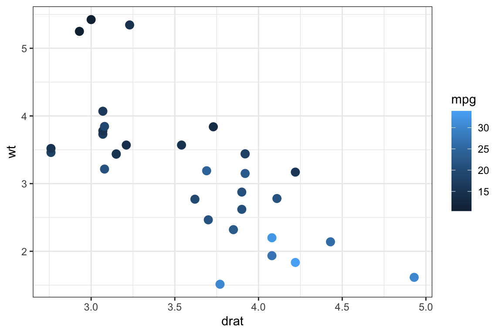

mtcars2 <- mtcars |> tibble::rownames_to_column(var = "carname")
mtcars2 |>
gf_point(wt ~ drat, color = ~mpg, size = 3)
Getting Started
Source:vignettes/interactive-graphics-intro.qmd
{ggformula} provides gf_*_interactive() companions to many of its plotting functions, built on top of {ggiraph}. These let you add tooltips, hover highlighting, click-driven JavaScript, linked brushing across multiple plots, and more – all from the same formula interface used by the rest of {ggformula}.
For example, a static scatterplot like this
mtcars2 <- mtcars |> tibble::rownames_to_column(var = "carname")
mtcars2 |>
gf_point(wt ~ drat, color = ~mpg, size = 3)
has an interactive counterpart
mtcars2 |>
gf_point_interactive(
wt ~ drat,
color = ~mpg,
tooltip = ~carname,
data_id = ~carname,
hover_nearest = TRUE,
size = 3
) |>
gf_girafe()that pops up the car’s name when you hover over a point.
Each interactive plot produced this way embeds its own copy of some JavaScript and font data, so a document with many such plots can become quite large. To keep the installed package small, the full, runnable demonstration – covering interactive geoms, scales, facets, themes, linked plots with {patchwork}, JavaScript click actions, and styling options – lives on the package website instead of in this vignette:
See the full interactive graphics article
That article is rendered from the same source used to develop and test these features, so it always reflects the current behavior of the gf_*_interactive() functions.